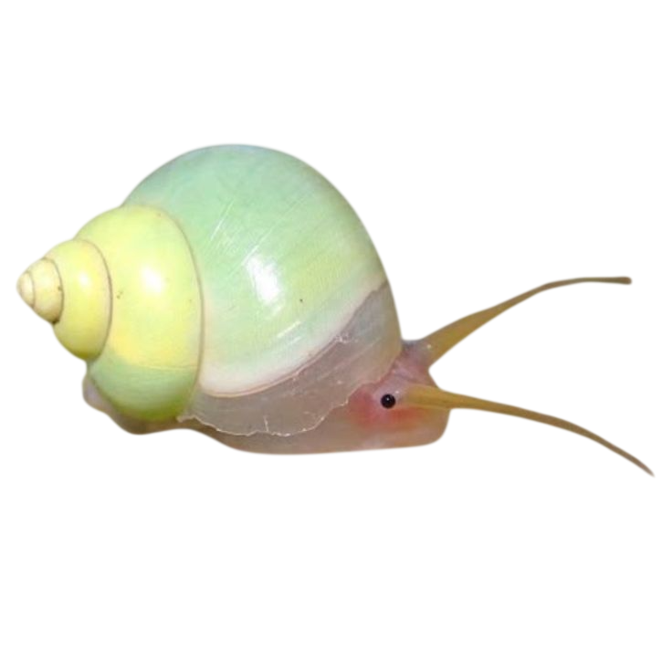

Welcome to the update history of Mossy!
+ Added !bubble
+ Added !feed
+ Added !nap
+ Expanded Mossy's thoughts
+ Increased fishiness by 437%
FIXES:
- Mossy no longer forgets how to nap.
- Reduced accidental bubble consumption by 12%.
KNOWN ISSUES:
- Still believes gravel is suspicious.
- Snail remains judgmental.
+ Mood system
+ !mood
+ !changemood
KNOWN ISSUES:
- Still suspicious of gravel.
- Bubbles may or may not be food.
+ friendship system
+ !pets
+ !talk
+ JSON memory system
+ Per-user tracking
+ Memory now saves after restart
+ Mossy now remembers individual users
+ Per-person friendship tracking
+ Mossy can now respond without commands sometimes
+ Random chat reactions added
+ Level system added
+ XP for interactions
+ Level ups trigger reactions
FIXES:
- Fixed indentation crashes
- Fixed command bugs
- Mossy xp system restored
- Stops bugging out when triggered (right now)
- Still remembers your server stats
FIXES:
- Fixed !think command not responding
- Fixed !mood command returning errors or missing output
- Fixed !bubble command not triggering correctly
- Fixed !feed command (renamed to !feedmossy)
- Fixed !nap command not executing
- Fixed !pets command not displaying correct data
- Fixed command system triggering both command responses and chat responses at the same time
IMPROVEMENTS:
+ Improved command detection to prevent overlap with message triggers
+ Adjusted message handling to avoid duplicate responses
+ Stabilized XP system to prevent repeated errors
+ Improved overall bot reliability during active chat use
NOTES:
- No changes to core features or user progression systems
- Memory system remains unchanged
NEW:
+ Added !mossyprune command to reset XP and levels
+ Friendship and pet statistics are preserved when pruning
FIXES:
- Reduced level-up requirement from 100 XP to 20 XP
- Fixed level progression not matching intended XP threshold
- Improved level-up consistency across commands
NOTES:
- Existing friendship data remains unchanged
- Memory system remains compatible with previous versions
FIXES:
- Fixed XP resetting after leveling up
- XP is now tracked as total lifetime XP
- Level progression now correctly updates every 20 total XP
- Improved level-up consistency across all XP-gaining interactions
NOTES:
- Existing friendship and pet statistics remain unchanged
- Existing user progression is preserved
- Mossy now remembers all the XP you've earned, not just the leftover after a level up 🐟💚
NEW:
+ Added shiny pebble collection system 🪨
+ Talking to Mossy now rewards 1 shiny pebble
+ Petting Mossy now rewards 2 shiny pebbles
+ Feeding Mossy now rewards 4 shiny pebbles
+ Added !giftpebbles to gift shiny pebbles to other server members
+ !level now displays your total shiny pebble collection
IMPROVEMENTS:
+ Existing save data is automatically upgraded to support pebbles
+ Pebble gifting includes safety checks to prevent invalid gifts
+ Shiny pebbles can be collected without affecting XP or friendship progression
NOTES:
- Shiny pebbles are collectibles, not a currency.
- Fish appreciate colorful things. Mossy believes shiny pebbles are the greatest gift one fish friend can give another.
ADDED:
+ New !pebbles command to quickly view your shiny pebble collection.
+ New !mossybag command to see your Mossy stats in one place.
+ New !mossyboard leaderboard showing the server's top pebble collectors!
+ Mossy now has a small chance to discover a shiny pebble while chatting with you.
+ Pebble gifting statistics have been added to your Mossy Bag.
IMPROVED:
- Leaderboard now correctly displays member names instead of unknown users.
- Improved compatibility with older save files.
NOTES:
- Mossy has become surprisingly good at finding shiny things in the gravel. He insists they're valuable, even if they're just pretty rocks.
